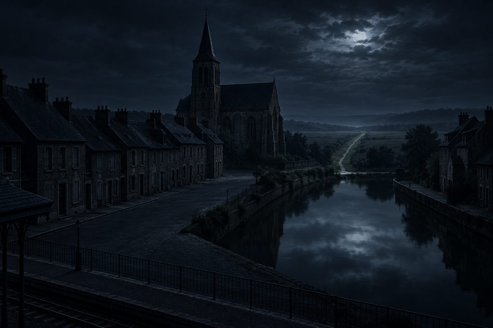

The station opens onto a street of terraces, all of them the same, all of them dark.
You walk because standing still is worse. After ten minutes the houses stop and there's a canal, and a church with no lights on, and behind the church a path running off into the fields.
Every other way out of here is a road. That one isn't.
Follow the path towards the church